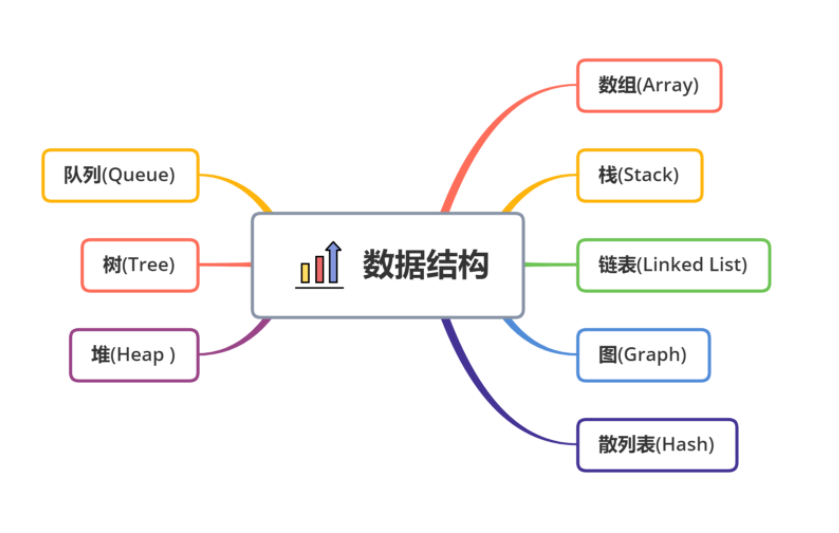
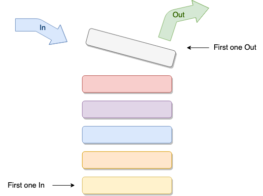
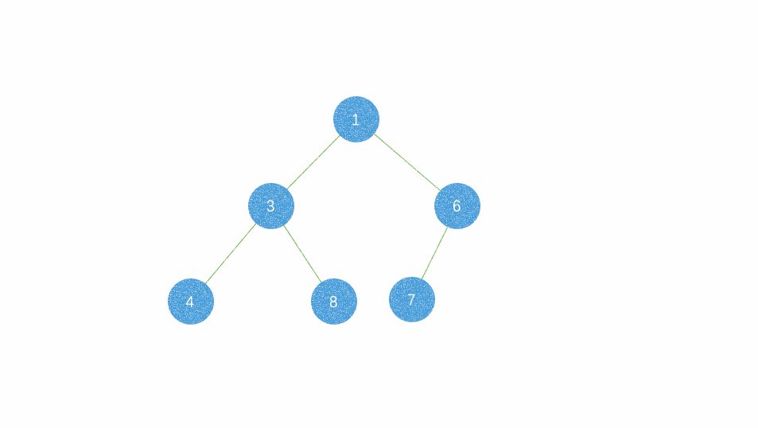

数组 🌈
定义
数组是由相同类型的元素的集合所组成的数据结构，分配一块连续的内存来存储。利用元素的索引可以计算出该元素对应的存储地址。
- 优点
- 按照索引查询元素速度快
- 按照索引遍历数组方便
- 缺点
- 数组的大小固定后就无法扩容了
- 数组只能存储一种类型的数据
- 扩展
- JavaScript数组中的默认存储值是undefined，其它编程语言数组的默认存储值是0或者是垃圾数据
- 与其它的编程语言不同，JavaScript可以访问数组中不存在的索引，会返回undefined，而其它的编程语言会报错或返回垃圾数据
- JavaScript可以存储不同类型的数据，而其它的编程语言只能存储一种数据类型的数据
- 当JavaScript中数组的存储空间不够用时，它会自动扩容，而其它的语言数组的大小是固定的，一旦定义了，就无法改变
- JavaScript中分配给数组的存储空间是不连续的，而其他编程语言中分配给数组的存储空间是连续的
- 适用场景 频繁查询，对存储空间要求不大，很少增加和删除的情况。
栈 🎯
定义
栈又称堆叠,是一种特殊的线性表，仅能在线性表的一端操作，栈顶允许操作，栈底不允许操作。 栈的特点是：先进后出，或者说是后进先出（LIFO, Last In First Out），从栈顶放入元素的操作叫入栈，取出元素叫出栈；

- 适用场景 栈的结构就像一个集装箱，越先放进去的东西越晚才能拿出来，所以，栈常应用于实现递归功能方面的场景，例如斐波那契数列、反转列表顺序、撤销一个或一系列操作
实现
这里利用栈实现一个撤销的功能
实例:
module.exports = class Stack {
data = []
maxSize
constructor(initialData, maxSize = -1) {
this.data = Array.isArray(initialData) ? initialData : (typeof initialData == "undefined" ? [] : [initialData])
this.maxSize = maxSize
}
isFull() {
return this.maxSize != -1 ? (this.data.length == this.maxSize) : false
}
isEmpty() {
return this.data.length == 0
}
add(item) {
if(this.isFull()) {
return false
}
this.data.push(item)
}
*generator() {
while(!this.isEmpty()) {
yield this.data.pop()
}
}
pop() {
const { value, done } = this.generator().next()
if(done) return false
return value
}
}
复制代码
使用:
const Stack = require("./stack.js")
class Operation {
constructor(val) {
this.value = val
}
}
class Add extends Operation {
apply(value) {
return value + this.value
｝
undo(value) {
return value - this.value
}
}
class Times extends Operation {
apply(value) {
return value * this.value
}
undo(value) {
return value / this.value
}
}
/** 操作栈 **/class OpsStack {
constructor() {
this.value = 0
this.operations = new Stack()
}
add(op) {
this.value = op.apply(this.value)
this.operations.add(op)
}
undo() {
if(this.operations.isEmpty()) {
return false
}
this.value = (this.operations.pop()).undo(this.value)
}
}
let s = new OpsStack()
s.add(new Add(1))
s.add(new Add(1))
s.add(new Times(2))
console.log("Current value: ", s.value)
s.undo()
s.undo()
console.log("Final value: ", s.value
// Current value: 4// Final value: 1复制代码
操作类（Add，Times）具有两种方法：apply使该操作生效（加乘），undo表示相反的操作（减除）。
队列 ✍
定义
队列与栈一样，也是一种线性表，不同的是，队列可以在一端添加元素，在另一端取出元素，也就是：先进先出。从一端放入元素的操作称为入队，取出元素为出队

- 适用场景因为队列先进先出的特点，在多线程阻塞队列管理中非常适用。
实现
实例:
class Queue {
data = [];
maxSize;
constructor(initialData, maxSize = -1) {
this.data = Array.isArray(initialData) ? initialData : typeof initialData == 'undefined' ? [] : [initialData];
this.maxSize = maxSize;
}
isFull() {
return this.maxSize != -1 ? this.data.length == this.maxSize : false;
}
isEmpty() {
return this.data.length == 0;
}
enqueue(item) {
if (this.isFull()) {
return false;
}
this.data.push(item);
}
*generator() {
while (!this.isEmpty()) {
yield this.data.shift();
}
}
dequeue() {
const { value, done } = this.generator().next();
if (done) return false;
return value;
}
}
复制代码
主要由enqueue和dequeue方法实现。通过enqueue可以将元素添加到队列中，而使用后者则可以将其删除。 这里将数组用于基本数据结构，因为它极大地简化了这两种方法。入队与将元素推送到数组中相同，通过简单的调用shift即可解决出队问题，该操作将删除第一个元素并返回它。
使用:
const Queue = require('./queues')
let q = new Queue(3, 2)
q.enqueue(1)
q.enqueue(2)
let x = 0while(x = q.dequeue()) {
console.log(x)
}
/*
Prints:
3
1
*/复制代码
除了我在这里展示的简单队列之外还有：
- 优先级队列：其元素在内部按优先级值排序。
- 循环队列：其最后一个元素指向第一个。
- 双端队列：一种具有队列和栈的性质的数据结构。双端队列中的元素可以从两端弹出（这听起来像作弊！）。
堆 🚀
定义
堆是一种比较特殊的数据结构，可以被看做一棵树的数组对象堆(heap)又被为优先队列(priority queue)。尽管名为优先队列，但堆并不是队列。因为队列中允许的操作是先进先出（FIFO），在队尾插入元素，在队头取出元素。而堆虽然在堆底插入元素，在堆顶取出元素，但是堆中元素的排列不是按照到来的先后顺序，而是按照一定的优先顺序排列的。在堆中最顶端的那一个节点，称作根节点（root node），根节点本身没有母节点（parent node）。
堆的一个经典的实现是完全二叉树(complete binary tree)，这样实现的堆称为二叉堆(binary heap)。
这里来说明一下满二叉树的概念与完全二叉树的概念。
满二叉树：除了叶子节点，所有的节点的左右孩子都不为空，就是一棵满二叉树，如下图。
 可以看出：满二叉树所有的节点都拥有左孩子，又拥有右孩子。 完全二叉树：不一定是一个满二叉树，但它不满的那部分一定在右下侧，如下图
可以看出：满二叉树所有的节点都拥有左孩子，又拥有右孩子。 完全二叉树：不一定是一个满二叉树，但它不满的那部分一定在右下侧，如下图  将根节点最大的堆叫做最大堆或大根堆，根节点最小的堆叫做最小堆或小根堆。常见的堆有二叉堆、斐波那契堆等。
将根节点最大的堆叫做最大堆或大根堆，根节点最小的堆叫做最小堆或小根堆。常见的堆有二叉堆、斐波那契堆等。 
- 特点
- 任一结点的值是其子树所有结点的最大值或最小值
- 必须是完全二叉树
- 适用场景 因为堆有序的特点，一般用来做数组中的排序，称为堆排序。
实现
最小堆的插入（ADD）

假设现有元素 5 需要插入，为了维持完全二叉树的特性，新插入的元素一定是放在结点 6 的右子树；同时为了满足任一结点的值要小于左右子树的值这一特性，新插入的元素要和其父结点作比较，如果比父结点小，就要把父结点拉下来顶替当前结点的位置，自己则依次不断向上寻找，找到比自己大的父结点就拉下来，直到没有符合条件的值为止。
- 在这里先将元素 5 插入到末尾，即放在结点 6 的右子树。
- 然后与父类比较， 6 > 5 ，父类数字大于子类数字，子类与父类交换。
- 重复此操作，直到不发生替换。最小堆的删除（DELETE）核心点：将最后一个元素填充到堆顶，然后不断的下沉这个元素。
 假设要从节点 1 ，也可以称为取出节点 1 ，为了维持完全二叉树的特性 ，我们将最后一个元素 6 去替代这个 1 ；然后比较 1 和其子树的大小关系，如果比左右子树大（如果存在的话），就要从左右子树中找一个较小的值替换它，而它能自己就要跑到对应子树的位置，再次循环这种操作，直到没有子树比它小。
假设要从节点 1 ，也可以称为取出节点 1 ，为了维持完全二叉树的特性 ，我们将最后一个元素 6 去替代这个 1 ；然后比较 1 和其子树的大小关系，如果比左右子树大（如果存在的话），就要从左右子树中找一个较小的值替换它，而它能自己就要跑到对应子树的位置，再次循环这种操作，直到没有子树比它小。
通过这样的操作，堆依然是堆，总结一下：
- 找到要删除的节点（取出的节点）在数组中的位置
- 用数组中最后一个元素替代这个位置的元素
- 当前位置和其左右子树比较，保证符合最小堆的节点间规则
- 删除最后一个元素
链表 🏉
定义
链表是物理存储单元上非连续的、非顺序的存储结构，数据元素的逻辑顺序是通过链表的指针地址实现，每个元素包含两个结点，一个是存储元素的数据域 (内存空间)，另一个是指向下一个结点地址的指针域。
- 优点
- 链表是很常用的一种数据结构，不需要初始化容量，可以任意加减元素；
- 添加或者删除元素时只需要改变前后两个元素结点的指针域指向地址即可，所以添加，删除很快；
- 缺点
- 因为含有大量的指针域，占用空间较大；
- 查找元素需要遍历链表来查找，非常耗时。
- 适用场景 数据量较小，需要频繁增加，删除操作的场景
根据指针的指向，链表能形成不同的结构，例如单链表，双向链表，循环链表等。

- 循环链表的特点
和单链表相比，循环链表的优点是从链尾到链头比较方便，当要处理的数据具有环型结构特点时，适合采用循环链表。
- 双向链表的特点
- 与单链表对比，双链表需要多一个指针用于指向前驱节点，因此如果存储同样多的数据，双向链表要比单链表占用更多的内存空间
- 双链表的插入和删除需要同时维护 next 和 prev 两个指针。
- 双链表中的元素访问需要通过顺序访问，支持双向遍历，这就是双向链表操作的灵活性根本
实现
双向链表的基本操作
- 添加元素
与单向链表相对比双向链表可以在 O(1) 时间复杂度搞定，而单向链表需要 O(n) 的时间复杂度。
双向链表的添加元素包括头插法和尾插法。
 头插法：将链表的左边称为链表头部，右边称为链表尾部。头插法是将右边固定，每次新增的元素都在左边头部增加。
头插法：将链表的左边称为链表头部，右边称为链表尾部。头插法是将右边固定，每次新增的元素都在左边头部增加。尾插法：将链表的左边称为链表头部，右边称为链表尾部。尾插法是将左边固定，每次新增都在链表的右边最尾部。
- 查询元素
 双向链表的灵活处就是知道链表中的一个元素结构就可以向左或者向右开始遍历查找需要的元素结构。因此对于一个有序链表，双向链表的按值查询的效率比单链表高一些。因为，我们可以记录上次查找的位置 p，每次查询时，根据要查找的值与 p 的大小关系，决定是往前还是往后查找，所以平均只需要查找一半的数据。
双向链表的灵活处就是知道链表中的一个元素结构就可以向左或者向右开始遍历查找需要的元素结构。因此对于一个有序链表，双向链表的按值查询的效率比单链表高一些。因为，我们可以记录上次查找的位置 p，每次查询时，根据要查找的值与 p 的大小关系，决定是往前还是往后查找，所以平均只需要查找一半的数据。 - 删除元素
在实际的软件开发中，从链表中删除一个数据无外乎这两种情况：
- 删除结点中“值等于某个给定值”的结点
- 删除给定指针指向的结点
 对于双向链表来说，双向链表中的结点已经保存了前驱结点的指针，删除时不需要像单链表那样遍历。所以，针对第二种情况，单链表删除操作需要 O(n) 的时间复杂度，而双向链表只需要在 O(1) 的时间复杂度。
对于双向链表来说，双向链表中的结点已经保存了前驱结点的指针，删除时不需要像单链表那样遍历。所以，针对第二种情况，单链表删除操作需要 O(n) 的时间复杂度，而双向链表只需要在 O(1) 的时间复杂度。
- 双向循环链表
 如图所示，双向循环链表的概念很好理解：「双向链表」 + 「循环链表」的组合。
如图所示，双向循环链表的概念很好理解：「双向链表」 + 「循环链表」的组合。
树 🏈
定义
树是一种数据结构，它是由n（n>=1）个有限节点组成一个具有层次关系的集合。把它叫做 “树” 是因为它看起来像一棵倒挂的树，也就是说它是根朝上，而叶朝下的。

- 特点
- 每个节点有零个或多个子节点；
- 没有父节点的节点称为根节点；
- 每一个非根节点有且只有一个父节点；
- 除了根节点外，每个子节点可以分为多个不相交的子树；
 树的不同部分被称为：
树的不同部分被称为：- 根节点/父节点(Root Node/parent Node)：在其下有子节点的节点。
- 叶节点(leaf nodes)：没有与其关联的子节点的节点。
- 边(edges)：两个节点之间的链接。
树的一些定义：
- 路径：从根节点到目标节点所需的节点列表。
- 树的高度：在根节点和最远的叶节点之间形成最大路径的节点数。
根据数据结构可以分为不同类型的树：
- 二叉树：二叉树是树的特殊一种，它添加，删除元素都很快，并且在查找方面也有很多的算法优化，所以，二叉树既有链表的好处，也有数组的好处，是两者的优化方案，在处理大批量的动态数据方面非常有用，它们还用于创建二进制搜索树。他的的一种潜在用例是压缩算法。具有如下特点：
- 每个结点最多有两颗子树，结点的度最大为2。
- 左子树和右子树是有顺序的，次序不能颠倒。
- 即使某结点只有一个子树，也要区分左右子树。
- 二分搜索树：也称为二叉搜索树、有序二叉树（ordered binary tree）或排序二叉树（sorted binary tree），是指一棵空树或者具有下列性质的二叉树
- 若任意节点的左子树不空，则左子树上所有节点的值均小于它的根节点的值；
- 若任意节点的右子树不空，则右子树上所有节点的值均大于或等于它的根节点的值；
- 任意节点的左、右子树也分别为二叉查找树；
- 深度优先搜索（DFS）：这是查找树的一种方式。它的工作方式是，首先先遍历整个左侧，然后回溯到最后访问的父级，然后移至右侧的子树。

遍历结果：A-> B-> C-> D-> E。节点的顺序由DFS方法确定，也可以按相反的顺序遍历。
实现
实例:
实现一个二叉搜索树
class BinaryTreeNode {
constructor(value) {
this.value = value;
this.left_child = null;
this.right_child = null;
}
compare(v) {
if (this.value > v) return -1;
if (this.value == v) return 0;
if (this.value < v) return 1;
}
}
class BST {
constructor() {
this.root_node = null;
}
/* 如果根节点为空（树为空），则elem将成为根节点
如果elem低于根节点，则切换到左边的子节点，检查是否为空
如果为空，elem将成为左子节点
如果没有，继续沿着这条路走
若elem高于或等于根节点，则切换到右子节点并检查它是否为空
如果为空，elem将成为正确的子节点
如果没有，继续沿着这条路走 */
add(elem) {
if (!this.root_node) {
this.root_node = new BinaryTreeNode(elem);
return;
}
let inserted = false;
let currentNode = this.root_node;
do {
let comp = currentNode.compare(elem);
if (comp == -1) {
if (!currentNode.left_child) {
currentNode.left_child = new BinaryTreeNode(elem);
inserted = true;
} else {
currentNode = currentNode.left_child;
}
}
if (comp != -1) {
if (!currentNode.right_child) {
currentNode.right_child = new BinaryTreeNode(elem);
inserted = true;
} else {
currentNode = currentNode.right_child;
}
}
} while (!inserted);
}
inorder(parent) {
if (parent) {
this.inorder(parent.left_child);
console.log(parent.value);
this.inorder(parent.right_child);
}
}
print() {
this.inorder(this.root_node);
}
}
复制代码
使用:
const Tree = require("./bst")
const t = new Tree()
t.add(10)
t.add(8)
t.add(11)
t.add(23)
t.add(1)
t.add(9)
t.print()
/*
Prints:
1
8
9
10
11
23
*/复制代码
最复杂的方法是add。它主要由do while遍历树的循环组成，以寻找新值的位置。 inorder方法只是遍历顺序的快速递归实现（先左移，然后居中，然后右移）。你可以切换顺序以相反的顺序遍历它。
扩展： 二叉树有很多扩展的数据结构，包括平衡二叉树、红黑树、B+树等，这些数据结构二叉树的基础上衍生了很多的功能，在实际应用中广泛用到，例如mysql的数据库索引结构用的就是B+树，还有HashMap的底层源码中用到了红黑树。这些二叉树的功能强大，但算法上比较复杂，想学习的话还是需要花时间去深入的。
图 🏂
定义
图是由结点的有穷集合V和边的集合E组成。其中，为了与树形结构加以区别，在图结构中常常将结点称为顶点，边是顶点的有序偶对，若两个顶点之间存在一条边，就表示这两个顶点具有相邻关系。
 按照顶点指向的方向可分为无向图和有向图： 图是一种比较复杂的数据结构，在存储数据上有着比较复杂和高效的算法，分别有邻接矩阵 、邻接表、十字链表、邻接多重表、边集数组等存储结构
按照顶点指向的方向可分为无向图和有向图： 图是一种比较复杂的数据结构，在存储数据上有着比较复杂和高效的算法，分别有邻接矩阵 、邻接表、十字链表、邻接多重表、边集数组等存储结构- 适用场景
图是非常通用的，因为它们可用于表示实体相互连接的几乎所有场景。我说的是用例，范围从网络布局到基于微服务的体系结构，再到真实世界的地图，再到你可以想象的任何事物。
如此之多，以至于整个数据库引擎都基于图的概念（例如Neo4J是一种非常流行的引擎）。我们刚刚涵盖的树中的所有概念（例如边，节点，路径等）在这里仍然有效。
实现
这里展示一个简单的树，包括一种如何实现深度优先搜索遍历的方法（请查看“树”部分以了解其含义）。
实例:
class Node {
constructor(value) {
this.value = value
this.links = []
}
linkTo(node, weight) {
this.links.push(new Link(this, weight, node))
}
}
class Link {
constructor(a, weight, b) {
this.left = a;
this.weight = weight
this.right = b
}
}
class Graph {
constructor(root_node) {
this.root_node = root_node
this.dfs_visited = new Set();
}
dfs(starting_node) {
if(!starting_node) starting_node = this.root_node
let node = starting_node
console.log(node.value);
this.dfs_visited.add(node);
node.links.forEach( neighbour => {
if (!this.dfs_visited.has(neighbour.right)) {
this.dfs(neighbour.right);
}
})
}
}
复制代码
使用:
每个节点都有一个“links”列表，它们表示两个节点之间的关系。并且你可以在任何地方添加想要的值（例如，网络连接的ms延迟，两个位置之间的流量或几乎所有内容只要你想）。 使用dfs方法遍历图，确保每个节点只访问一次。这里展示一个示例：
//定义节点let A = new Node("A")
let B = new Node("B")
let C = new Node("C")
let D = new Node("D")
let E = new Node("E")
let F = new Node("F")
let G = new Node("G")
//定义节点间的关系
A.linkTo(B, 1)
A.linkTo(C, 2)
B.linkTo(D, 1)
C.linkTo(E, 10)
D.linkTo(E, 10)
D.linkTo(F, 1)
D.linkTo(G, 1)
G.linkTo(G, 1)
let g = new Graph(A)
//遍历图表
g.dfs()
复制代码
换句话说，每个节点只能访问一次。您可以使用图做更多有趣的事情，例如实现Dijkstra的算法以找到两个节点之间的最短路径，或者采用AI路线并实现神经网络。想象力是Graphs的极限，所以暂时不要纠正它们，给它们一个机会。
散列表 🎉
定义
散列表，也叫哈希表，是根据关键码和值 (key和value) 直接进行访问的数据结构，通过key和value来映射到集合中的一个位置，这样就可以很快找到集合中的对应元素。
 记录的存储位置=f(key)
记录的存储位置=f(key)这里的对应关系 f 成为散列函数，又称为哈希 (hash函数)，而散列表就是把Key通过一个固定的算法函数既所谓的哈希函数转换成一个整型数字，然后就将该数字对数组长度进行取余，取余结果就当作数组的下标，将value存储在以该数字为下标的数组空间里，这种存储空间可以充分利用数组的查找优势来查找元素，所以查找的速度很快。它允许存储键值对并快速检索它们（有人会说它的复杂度为O（1）最佳情况），是非常惊人的。哈希表在应用中也是比较常见的，就如Java中有些集合类就是借鉴了哈希原理构造的，例如HashMap，HashTable等。
- 优点
- 利用hash表的优势，对于集合的查找元素时非常方便；
- 缺点
- 因为哈希表是基于数组衍生的数据结构，在添加删除元素方面是比较慢的；
- 适用场景 哈希表的应用场景很多，当然也有很多问题要考虑，比如哈希冲突的问题，如果处理的不好会浪费大量的时间，导致应用崩溃。如果实施得当，该结构将非常有效，以至于广泛用于诸如数据库索引（通常在需要快速查找操作时将字段设置为索引）等场景，甚至是缓存实现，从而允许快速查找操作以进行检索缓存的内容。正如您可能已经猜到的，如果您希望进行快速且重复的查找，那么这是一个很好的结构。
实现
在JavaScript中，实现哈希映射非常容易，因为我们有对象字面量可以用来添加随机属性（即键）。这是实现一个允许使用数字键的哈希映射。
实例:
class HashMap {
constructor() {
this.map = {}
}
hash(k) {
return k % 10
}
add(key, value) {
let k = this.hash(key)
if(!this.map[k]) {
this.map[k] = []
}
this.map[k].push(value)
}
get(key) {
let k = this.hash(key)
return this.map[k]
}
}
let h = new HashMap()
h.add(10, "hello")
h.add(100001, "world")
h.add(1, "this is a string")
console.log(h)
复制代码
使用:
输出结果如下
HashMap {
map: { '0': [ 'hello' ], '1': [ 'world', 'this is a string' ] }
}
复制代码
注意为了确保我们最多只保留10个key，我的hash方法做了一个余10的操作导致"world"与"this is a string"跟同一个key关联，这就是所谓的哈希冲突。如果你的内存有限，或者出于某种原因需要严格控制键，这将很有帮助。实现哈希方法的方式将决定哈希映射的最终效果。